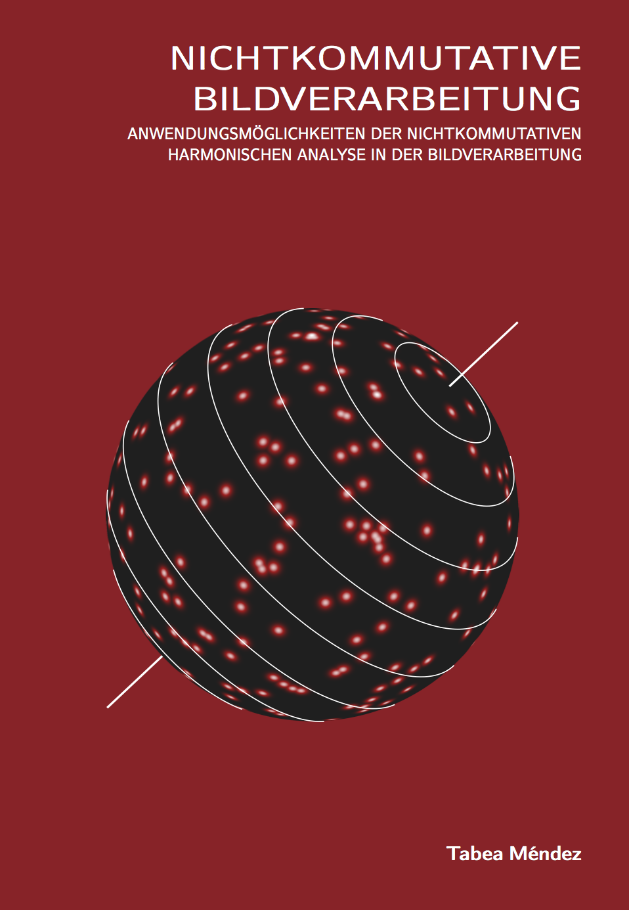
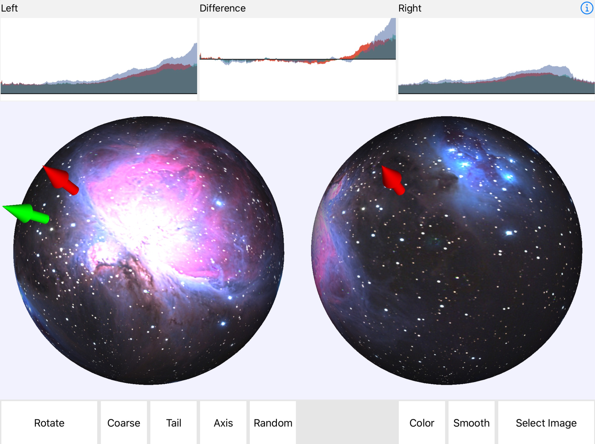
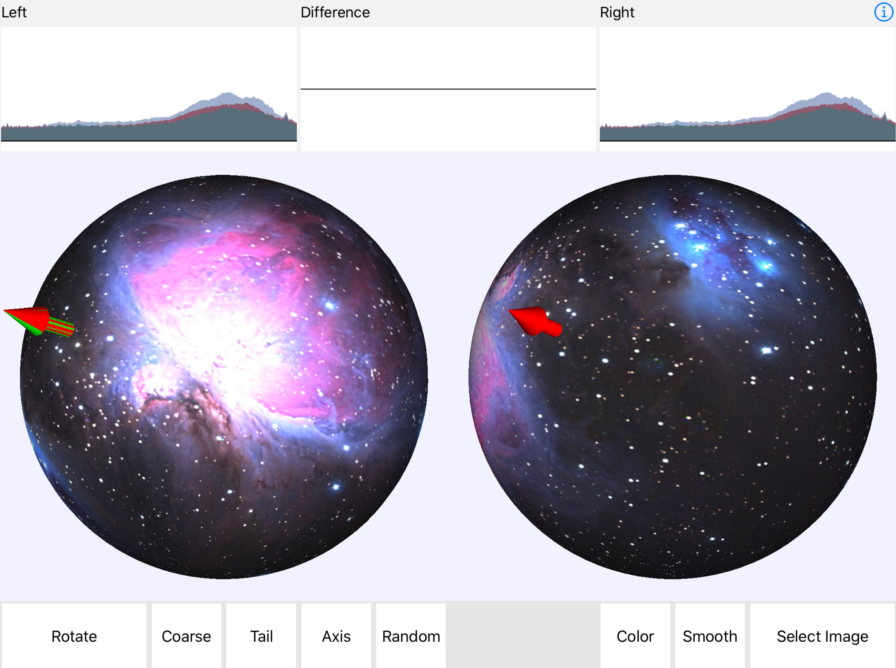
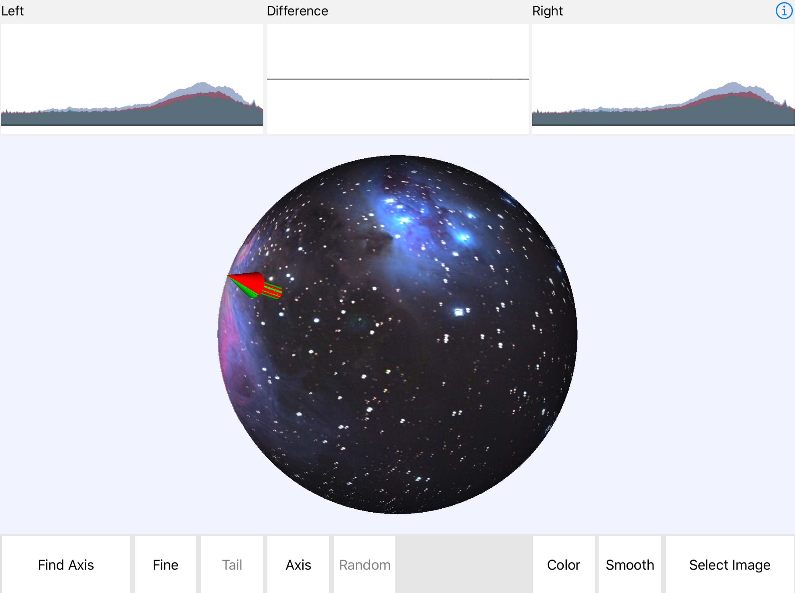
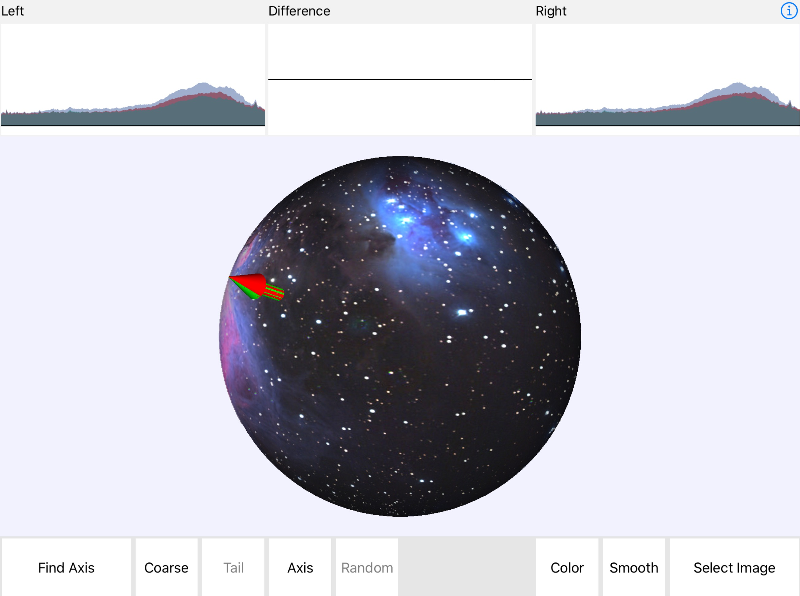

 The Méndez-transform was developed by Tabea Méndez in her book Nichtkommutative Bildverarbeitung [1] (Book cover displayed on the right) as a solution to the noncommutative image registration problem on the group SO(3). For two images on a sphere that differ only by a rotation of the sphere, this problem asks to find the rotation in SO(3) that makes the images coincide. The problem is solved in two steps. In the first step, the Méndez-transform is used to find the axis of rotation. In the second, much easier step, one needs to find only the rotation angle.
This App allows to play around with the Méndez-transform for a few selected images. When it starts up, it loads an image on the two spheres. The user can then try to find the rotation axis, and when (s)he thinks (s)he has found it, (s)he can try to rotate the image around this axis and check whether (s)he can actually make them coincide.
In the top row of the screen, the Méndez-transforms of the images are displayed for the images on the two spheres, the difference and the mirrored difference. The currently selected rotation axis is displayed in red. By touching the area with the two spheres and dragging, the user can move the rotation axis. The goal is to minimize the difference of the two Méndez-transforms (second graph in the top row). By swiping over the Méndez-transform displays, the user can scale the graphs.
|  |  |
| Current rotation axis (red) misaligned, Méndez transform difference (second graph in top row) is not zero. | Rotation axis found, Méndez transform difference vanishingly small. |
The actual rotation axis is displayed in green. The button Axis toggles display of the axis.
Due to limited screen resolution, it is sometimes difficult to pinpoint the direction of the axis. The Fine-button allows to switch to a high resolution mode.
It is sometimes difficult to find the minimum because of noise. Smoothing the image reduces the noise and makes it easier to find the minimum. The Smooth button does this. Unfortunately it also introduces some artefacts into the image (this is caused by the image filter library built into iOS), which usually add a small bump of noise to the Méndez-transform that you have to learn to ignore. Hitting Smooth again returns to the original image.
To check the rotation axis, tap the button Rotate. The two spheres are then moved to the center and the left sphere made transparent. Touching the area of the two spheres no longer moves the axis of rotation, but changes the rotation angle. Move your finger left and right on the screen to find the angle where the two images coincide (the vertical motion is ignored in this mode). If the axis was not determined accurately enough, you will not be able to make the images coincide.
|  |  |
| Current rotation angle almost correct, but stars appear as pairs. | Current rotation angle correct, perfect alignment of the two images. |
The Random button computes a new random rotation axis with the same image. Go to "Find axis" mode to find this new axis.
The button Select image allows to select other images. Some of them are computed on the fly. The Dots image consists of random colored dots, and will be different each time it is selected. The Stripes image contains red, green and blue stripes in a way that each color channel is rotationally symmetric around one of the coordinate axes. The exist multiple rotation axes for each color channel, but only one for the color image.
The Méndez-transform App supports Document Interaction. It anounces itself to the operating system as a viewer for PNG and JPEG images, so images in Email messages etc. can be opened with the it. The App also asks the user whether (s)he wants to keep the image for future use, in which case it will be added to the menu of selectable images. Images twice as wide as they are high work best. It is a good idea to place the images inside a suitably large dark background.
Additional images can also be added via iTunes: go to your iPad -> Apps and scroll to the bottom. Then select the Méndez Transform App. iTunes displays a list of image files (the ones you have opened so far and told the App to keep). You can add new images from that dialog.
The original description of the Méndez-transform in [1] was only for monochrome images. When computing the Méndez-transform of an image, this App just uses the green channel. For some images, e.g. for Stripes, this will not result in a correct determination of the rotation axis, because when looking only at the green channel, this image is rotationally symmetric. For such cases, the button Mono allows to switch to color mode. In color mode, a Méndez-transform is computed for each color channel, i.e. three Méndez-transforms have to be computed for each axis direction update. This mode is considerably slower, but it allows to find the axis even for difficult cases like the Stripes image.
Given the axis, the Méndez-transform computes the average of the pixel values along latitude circles around this axis. For the common rotation axis, these averages coincide for the two images. If we write the two images as functions f(φ, θ) and g(φ,θ) for spherical coordinates φ (longitude) and θ (latitude), and denote the Méndez-transform for the axis v as Mf(v), then finding the axis amounts to minimizing the difference Mf(v) - Mg(v) = M(f-g)(v) (the Méndez-transform is linear). Any norm on the functions can be used for this purpose, the app just displays a graph of the difference and asks a user to minimize the “black area”. This is the same as minimizing the difference in the L1-norm.
More generally, the Méndez-transform Mf is a mapping from the sphere S2 to the space of real valued functions on the interval [-1,1]. Finding the rotation axis means finding the point v on the sphere S2, v ∈ S2, that minimizes ||Mf(v)||.
There is also a link to the theory of Gelfand pairs in noncommutative harmonic analysis, as explained in the appendix to the book [1]. The averaging operation of the Méndez-transform turns out to be just the averaging over double cosets K\G/K for the Gelfand pair (G,K)=(SO(3), SO(2)). Convolution on L1(K\G/K) is commutative, which indicates that convolution methods can be used to partially solve the registration problem. One then only has to find the element k∈K to complete the solution to the noncommutative registration problem.
This App also demonstrates that it is possible to compute the Méndez transform relatively efficiently. On an iPad Pro 12", the computation of a single Méndez transform takes around 50ms. The source code for this App is available on GitHub at https://github.com/AndreasFMueller/MendezTransform.
The Méndez transform app does not store any personal data, does not collect any data about what the user is doing with it and it does not connect to any external network devices. The source code of the app is publicly available on Github at the link provided above.